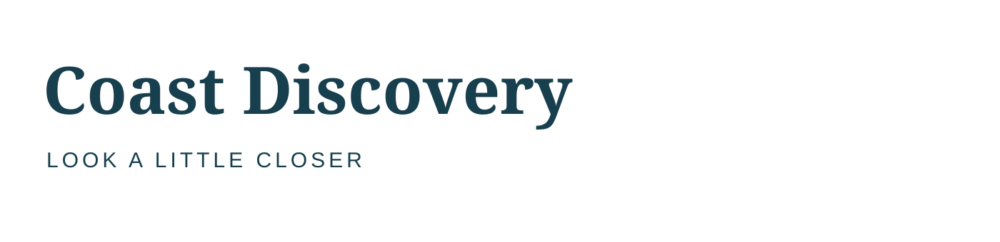
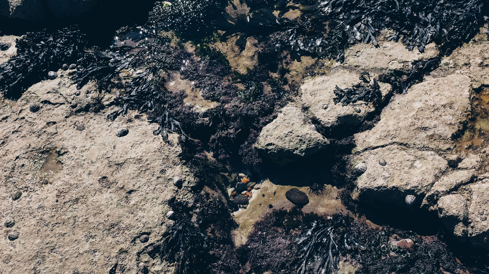
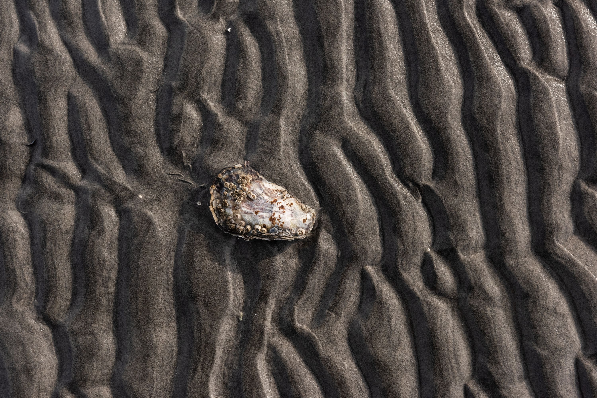
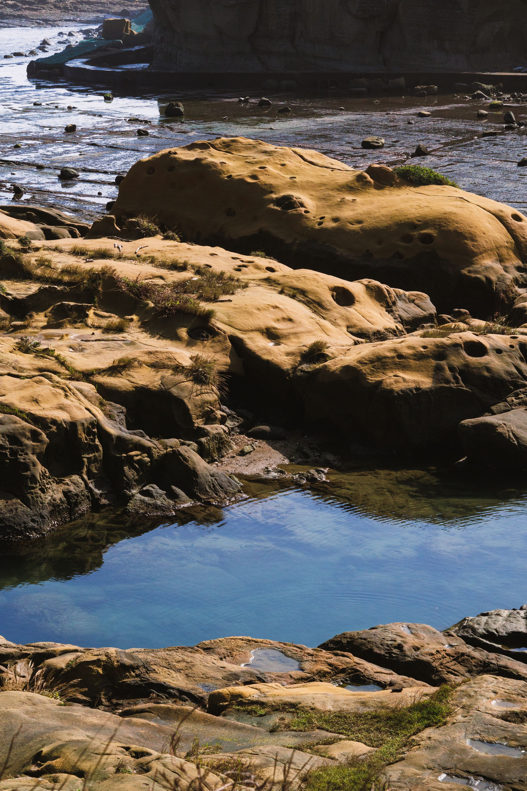
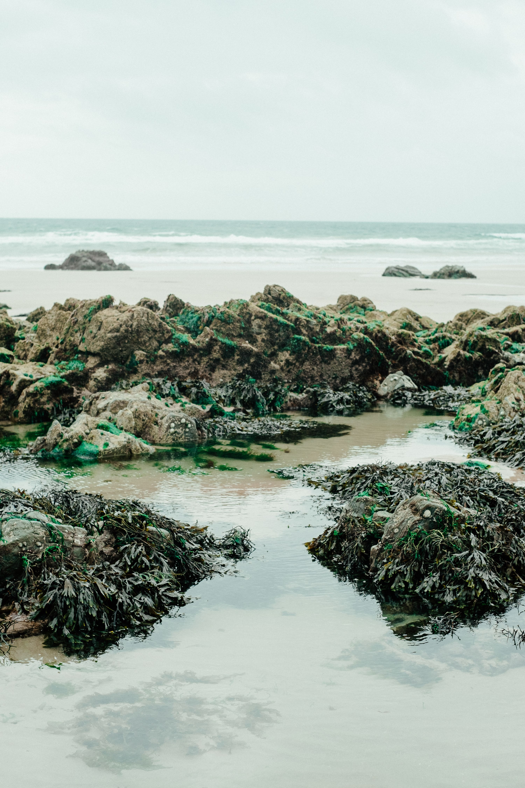
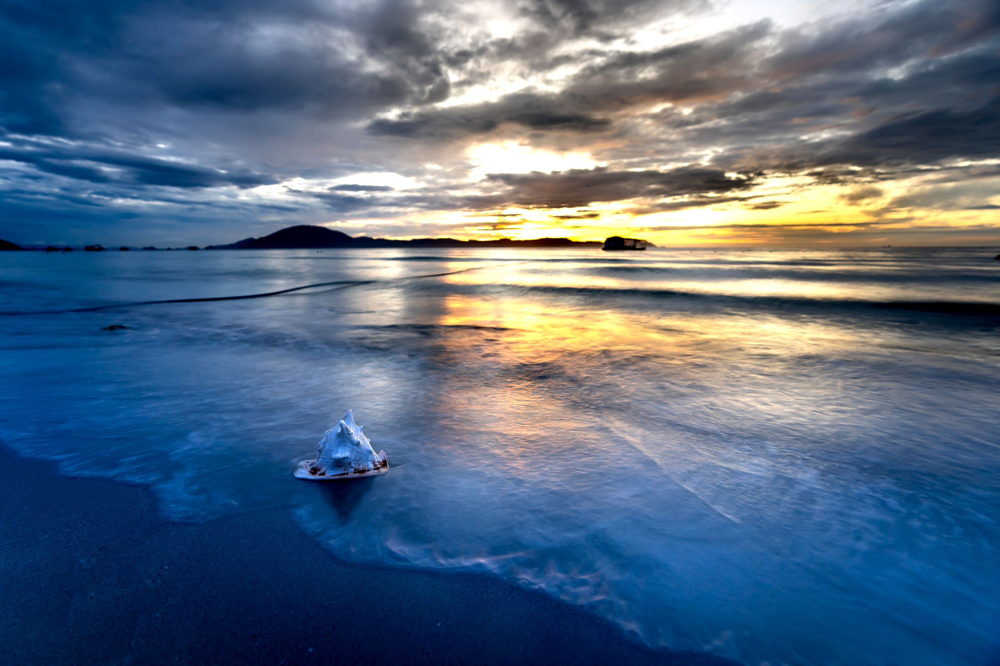
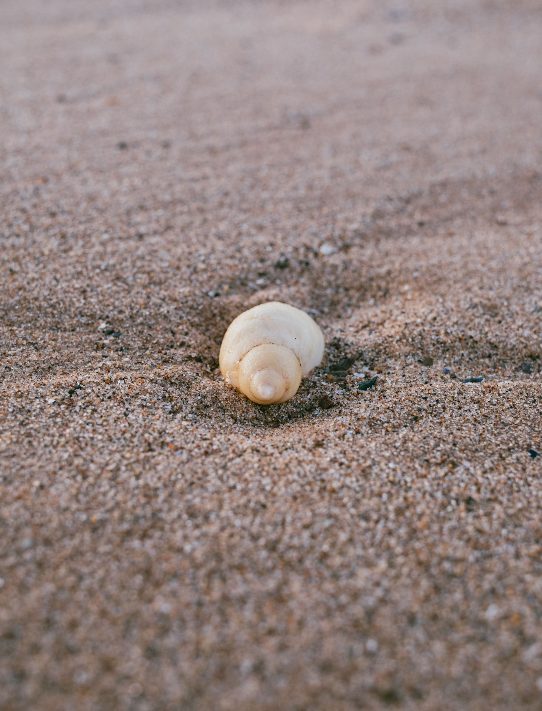
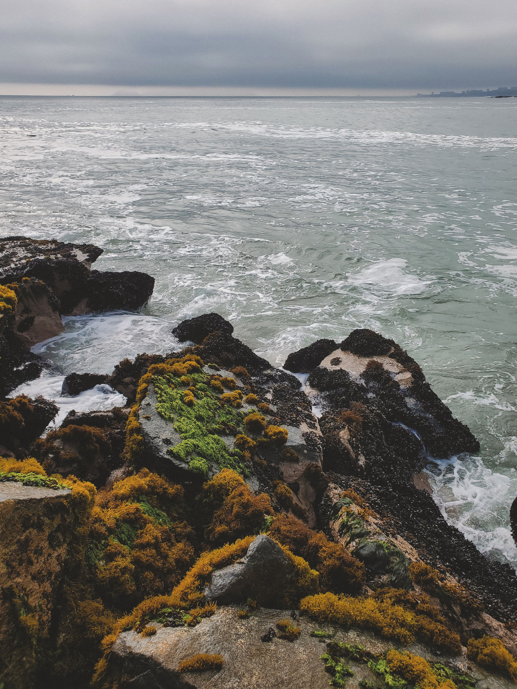
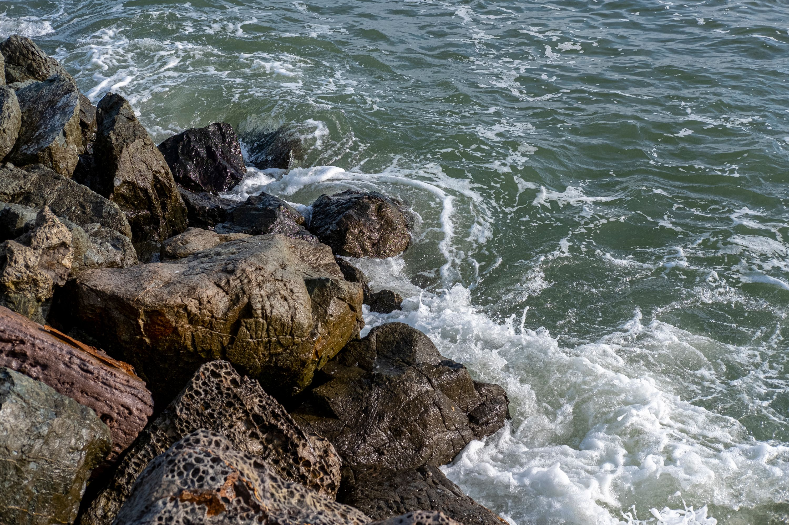

Show a learning encounter, rather than simply an attractive destination.

Original synthetic production asset. This fictional client and venue do not represent a real organisation.
The person behind the brief
Leah, education coordinator
Coast Discovery is a fictional shoreline learning centre. Its earlier publicity looked like a scenic tourism ad: people liked the ocean photograph but could not say what they would do. Leah wants curiosity about noticing small shoreline details without implying scientific claims that the centre has not established.
The audience
Families and older teens interested in a calm guided introduction to shoreline observation.
Approved factual copy
- Shoreline discovery walk
- Saturday · 10–11:30 am
- Meet at Coast Discovery · 6 Shore Road
- Look closely. Ask questions.
- Wear sturdy shoes. Stay with the group.
You may write your own headline and reorder this information. Retain the facts and practical instructions. Dates are fictional weekday descriptions; no real scheduled event is implied.
Boundary: Do not identify a species from an unverified image, make environmental impact claims, or present the source coast as the real event location. The session is fictional.
Your creative territory
You may use scale, detail, a lens metaphor, type, a specimen-style original illustration or a landscape. No prescribed environmental slogan.
The logo identifies the client. Keep its proportions and readable space around it; do not use a photograph as the client's trademark. Palette roles and title fonts below are starting directions. You may propose a purposeful alternative palette or type system and defend it at the planning conference. No layout is prescribed.
Production scope: 2550 × 3300 px RGB print study and 1080 × 1350 px RGB screen adaptation. Keep separate layered PSDs or genuinely editable artboards. Export PNGs. The school printer/profile must be checked before a press-ready claim.
Download this complete kitBrand ingredients

Colour SVG · Dark SVG · Light SVG · Transparent PNG
Type candidates: Georgia: thoughtful title candidate; Arial: practical detail. Use school-installed fonts; no installation is required. If a candidate is unavailable, use an available serif/sans-serif equivalent and record the substitution.
ACO swatches · ASE palette · CSS values · Colour-role record
Files have deterministic colour values; Photoshop import/manual-add and artboard captures are awaiting the native run. See the software lab. Palette harmony alone does not guarantee readable text.
Choose your raw materials
Complete source and licence links
Compare the shoreline-study image with a close detail. Identify what text is needed to make the activity clear. Use only what earns a role in your concept. You may combine, crop or adapt permitted assets and add your own credited work. The photographs show their source settings, not this fictional business. Do not imply endorsement. For CC BY-SA source derivatives, retain the source's share-alike licence and credit in the delivered work; keep other assets' rights identifiable.
Coast Discovery original teaching scene
1536 × 1024 · OpenAI image generation, art-directed for Chad
Original AI-assisted classroom production asset · source · synthetic
Seaweed On Rocky Seashore At Low Tide
3000 × 1688 · Cátia Matos
Pexels License · source
A Seashell On The Beach Sand
3000 × 2002 · Trygve Finkelsen
Pexels License · source
Serene Coastal Rocks And Tide Pools By Day
3000 × 4500 · CX LEE
Pexels License · source
Sandy Seashore With Seaweed And Stones During Low Tide
3000 × 4500 · Harry Cooke
Pexels License · source
Seashell On Sand Beach On Sunset
3000 × 2000 · Quang Nguyen Vinh
Pexels License · source
Seashell Lying On Sand
3000 × 3930 · Ellie Burgin
Pexels License · source
Rocky Shoreline With Seaweed And Waves
3000 × 4000 · Axel Sandoval
Pexels License · source
Close Up Of Rocks On Shore
3000 × 2000 · David McElwee
Pexels License · source